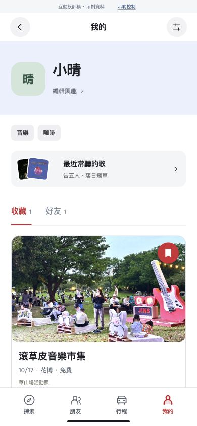

MATCH! V7
畫面總覽
功能連接
簡報安排
操作新版
V6 → V7
主流程保留，
出行之後繼續累積。
原有探索、共同喜好、同行條件與音樂功能保留。新版把「我的」延伸為可回看的旅程，以及可玩的城市。
保存版本 V6
收藏與興趣
活動、好友、常聽的歌。

開啟 V6
新版本 V7
自己的城市紀錄
里程、區域足跡、收藏與 Run。
開啟 V7
出行
完成一趟
保留同行、歌單與抵達。
紀錄
里程與足跡
看到去了哪裡、累積多少。
收藏
我的熊
把旅程和遊戲收藏穿上身。
互動
跑一段城市
30 秒常設大稻埕路線。
朋友
一起比一場
相同路線，比單次最高分。